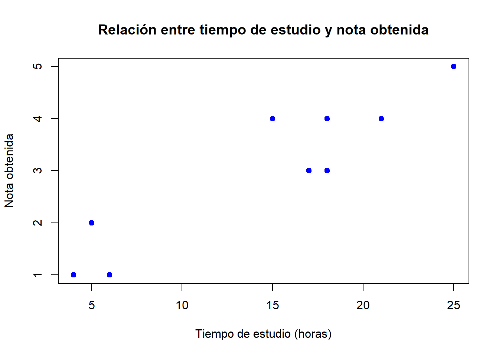
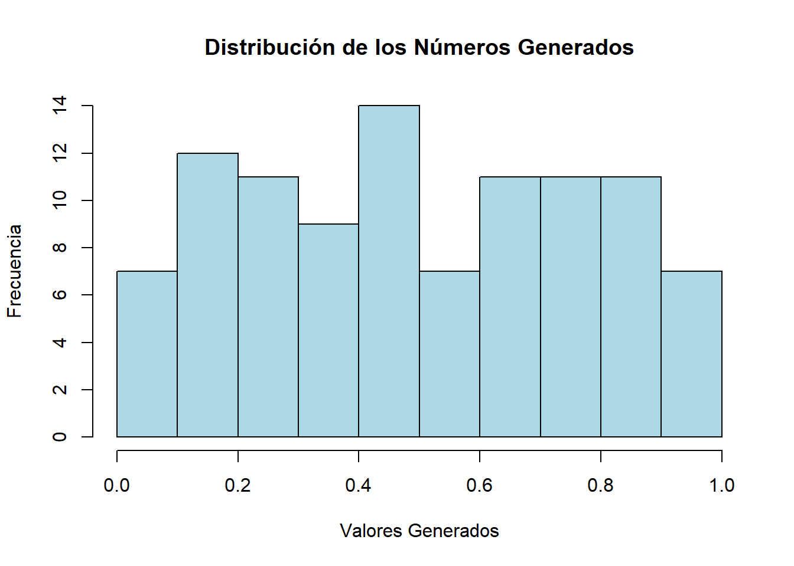

Hasta este punto, los procedimientos estadísticos abordados han requerido el cumplimiento de ciertos supuestos para garantizar la validez de los resultados. Un ejemplo relevante es la prueba t de Student, que exige que la variable de interés siga una distribución normal en la población.
El Teorema Central del Límite (TCL) establece que, si las muestras son lo suficientemente grandes, la distribución muestral tenderá a ser aproximadamente normal, lo que permite relajar el supuesto de normalidad en la población cuando el tamaño muestral es suficientemente grande. No obstante, en la práctica, no siempre es posible contar con muestras extensas, lo que implica que los supuestos de normalidad siguen siendo un aspecto crítico en el análisis estadístico.
Todas las pruebas vistas hasta el momento requieren condiciones específicas sobre la población de estudio. Estas condiciones afectan la validez y precisión de los resultados obtenidos. Sin embargo, en la práctica:
El incumplimiento de los supuestos puede generar resultados imprecisos o incluso incorrectos en la toma de decisiones estadísticas. En particular:
Por esta razón, es fundamental evaluar la adecuación de cada prueba antes de aplicarla, considerando alternativas no paramétricas cuando los supuestos no pueden cumplirse de manera satisfactoria.
Cuándo Utilizar Pruebas No Paramétricas
Las pruebas no paramétricas son una alternativa a las pruebas paramétricas cuando los datos no cumplen con ciertos supuestos fundamentales. Su aplicación es recomendable en los siguientes casos:
Cuando no se cumplen los supuestos paramétricos, tales como:
Cuando se dispone de tamaños muestrales pequeños, generalmente menores a 30 observaciones, lo que dificulta verificar los supuestos de normalidad en la población.
Cuando se requiere convertir datos cualitativos en información cuantificable, por ejemplo, en estudios de mercado donde se transforman escalas nominales u ordinales en escalas de intervalo para analizar aspectos como:
Ventajas de Utilizar Pruebas No Paramétricas
Las pruebas no paramétricas presentan diversas ventajas, entre ellas:
Desventajas de las Pruebas No Paramétricas
A pesar de su utilidad, estas pruebas presentan ciertas limitaciones:
Principales Pruebas No Paramétricas
Las pruebas no paramétricas más utilizadas en estadística inferencial incluyen:
La prueba de signos es un método estadístico no paramétrico utilizado para evaluar si la mediana poblacional de una variable difiere significativamente de un valor de referencia. También se emplea para comparar dos muestras pareadas, verificando si existe una diferencia significativa en la mediana de las diferencias.
Prueba de una sola muestra: Para una única muestra, se analiza si la mediana poblacional (\(Me\)) es diferente de un valor de referencia (\(Me_0\)). Se plantean las siguientes hipótesis alternativas:
Prueba para muestras pareadas:
Para muestras pareadas, se considera la mediana de las diferencias \(Me_D\) entre cada par de valores \((X_i, Y_i)\). Se define cada diferencia como \(D_i = X_i - Y_i\). Las hipótesis alternativas pueden formularse de la siguiente manera:
En este estudio, se analiza el impacto del deporte en la percepción de autoimagen de un grupo de personas. Carlos y Ángela, administradoras e investigadoras en una firma de artículos deportivos, plantean la hipótesis de que la práctica deportiva influye en la imagen que cada persona tiene de sí misma. Para evaluar esta premisa, se seleccionó aleatoriamente a un grupo de 18 participantes, quienes respondieron un cuestionario de autoimagen antes de iniciar un programa de ejercicios.
En la escala de medición utilizada:
Los puntajes obtenidos en la prueba fueron los siguientes : 16, 15, 12, 17, 18, 14, 16, 14, 16, 17, 19, 16, 14, 21, 20, 16, 16, 16 |
Se plantea la siguiente prueba de signos para evaluar si la mediana de la autoimagen es mayor a 15, lo que indicaría un efecto positivo del deporte en la percepción personal.
Las hipótesis estadísticas:
\[ H_0: Me \leq 15 \]
\[ H_1: Me > 15 \]
donde:
El código siguiente implementa el test de signos usando hipótesis alternativa unilateral derecha:
# Cargar la librería BSDA, que contiene la función SIGN.test()
library(BSDA)
# Definir el conjunto de datos con los valores obtenidos en la encuesta
x.img <- c(16, 15, 12, 17, 18, 14, 16, 14, 16,
17, 19, 16, 14, 21, 20, 16, 16, 16)
# Aplicar la prueba de signos para contrastar H0: Me = 15 contra H1: Me > 15
SIGN.test(x.img, md = 15, alternative = "greater")
# Cargar la librería BSDA, que contiene la función SIGN.test()
library(BSDA)
# Definir el conjunto de datos con los valores obtenidos en la encuesta
x.img <- c(16, 15, 12, 17, 18, 14, 16, 14, 16,
17, 19, 16, 14, 21, 20, 16, 16, 16)
# Aplicar la prueba de signos para contrastar H0: Me = 15 contra H1: Me > 15
SIGN.test(x.img, md = 15, alternative = "greater")
One-sample Sign-Test
data: x.img
s = 13, p-value = 0.02452
alternative hypothesis: true median is greater than 15
95 percent confidence interval:
16 Inf
sample estimates:
median of x
16
Achieved and Interpolated Confidence Intervals:
Conf.Level L.E.pt U.E.pt
Lower Achieved CI 0.8811 16 Inf
Interpolated CI 0.9500 16 Inf
Upper Achieved CI 0.9519 16 InfLos resultados del test se muestran a continuación:
One-sample Sign-Test
data: x.img
s = 13, p-value = 0.02452
alternative hypothesis: true median is greater than 15
95 percent confidence interval:
16 Inf
sample estimates:
median of x
16
Achieved and Interpolated Confidence Intervals:
Conf.Level L.E.pt U.E.pt
Lower Achieved CI 0.8811 16 Inf
Interpolated CI 0.9500 16 Inf
Upper Achieved CI 0.9519 16 Inf
El valor-p = 0.02452 por tanto con una significancia del 5% se acepta que la mediana de la autoimagen es mayor a 15, lo que indica que la práctica deportiva mejora la percepción de autoimagen de los participantes.
La prueba Chi-cuadrado de bondad de ajuste es un procedimiento estadístico no paramétrico que permite evaluar si la distribución de datos observados sigue una distribución teórica esperada. Se emplea frecuentemente para comprobar si los datos siguen una distribución normal, uniforme, de Poisson, entre otras.
Las hipótesis estadísticas:
\(H_0\): La distribución de los datos coincide con la distribución teórica esperada..
\(H_1\): Al menos una de las frecuencias observadas difiere significativamente de la distribución teórica esperada..
Supuestos de la prueba:
Las observaciones son independientes.
El tamaño muestral es suficientemente grande, asegurando que las frecuencias esperadas sean al menos 5 en cada categoría.
Los datos analizados corresponden a una variable categórica o han sido agrupados en clases adecuadas.
El dueño de una panadería busca establecer políticas de inventario basadas en la demanda de cuatro marcas de leche. Para ello, es necesario determinar si las ventas diarias de cada marca siguen una distribución uniforme.
Para evaluar esto, se empleará la prueba de bondad de ajuste de Chi-cuadrado, la cual permite comparar las frecuencias observadas con las frecuencias esperadas bajo la suposición de que todas las marcas tienen demanda similar.
Las hipótesis estadísticas:
\(H_0\): La demanda se distribuye uniformemente entre todas las marcas.
\(H_1\): La demanda no sigue una distribución uniforme, es decir, al menos una marca tiene una demanda diferente a las demás.
donde:
Las ventas registradas en un día para cada marca de leche fueron las siguientes:
| Marca | Ventas observadas |
|---|---|
| Marca 1 | 33 |
| Marca 2 | 22 |
| Marca 3 | 21 |
| Marca 4 | 24 |
El siguiente código ejecuta la prueba de Chi-cuadrado en R indicando en el código las proporciones esperadas bajo la hipótesis nula. Para una distribución uniforme, la proporción de valores por cada marca debe ser la misma.
# Cargar librería (opcional, base R ya incluye chisq.test) # library(stats) # Definir las frecuencias observadas de ventas por marca ventas_observadas <- c(33, 22, 21, 24) # Definir las proporciones esperadas bajo la hipótesis nula # En este caso, especificamos que todas las marcas tienen la misma probabilidad (distribución uniforme) proporciones_esperadas <- c(0.25, 0.25, 0.25, 0.25) # Aplicar la prueba de bondad de ajuste de Chi-cuadrado resultado_chi <- chisq.test(ventas_observadas, p = proporciones_esperadas) # Mostrar los resultados del test print(resultado_chi) # Verificar las frecuencias esperadas calculadas por R print(resultado_chi$expected)
# Cargar librería (opcional, base R ya incluye chisq.test)
# library(stats)
# Definir las frecuencias observadas de ventas por marca
ventas_observadas <- c(33, 22, 21, 24)
# Definir las proporciones esperadas bajo la hipótesis nula
# En este caso, especificamos que todas las marcas tienen la misma probabilidad (distribución uniforme)
proporciones_esperadas <- c(0.25, 0.25, 0.25, 0.25)
# Aplicar la prueba de bondad de ajuste de Chi-cuadrado
resultado_chi <- chisq.test(ventas_observadas, p = proporciones_esperadas)
# Mostrar los resultados del test
print(resultado_chi)
Chi-squared test for given probabilities
data: ventas_observadas
X-squared = 3.6, df = 3, p-value = 0.308# Verificar las frecuencias esperadas calculadas por R
print(resultado_chi$expected)[1] 25 25 25 25Los resultados del test corresponde a lo siguiente:
Chi-squared test for given probabilities data: ventas_observadas X-squared = 3.6, df = 3, p-value = 0.308
Dado que el valor-p obtenido es 0.308, el cual es mayor que 0.05, no se rechaza la hipótesis nula. Por lo tanto, no hay evidencia suficiente en la muestra para inferir que la demanda de las marcas es diferente, por lo que se asume que la demanda es igual para todas las marcas con una significancia del 5%
Se desea determinar si los resultados dr las calificaciones obtenidos por un grupo de estudiantes siguen una distribución normal con media 3.5 y desviación estándar 0.7.
Las hipótesis estadísticas:
\(H_0\): Las notas se distribuyen Normal.
\(H_1\): Las notas no se distribuyen Normal.
Los datos corresponde a:
4.1, 2.7, 3.1, 3.2, 3.0, 3.2, 2.0, 2.4, 1.6, 3.2, 3.1, 2.6, 2.0, 2.4, 2.8, 3.3, 4.0, 3.4, 3.0, 3.1, 2.7, 2.7, 3.0, 3.8, 3.2, 2.2, 3.5, 3.5, 3.8, 3.5, 3.9, 4.2, 4.3, 3.9, 3.2, 3.5, 3.5, 3.7, 4.1, 3.7, 3.5, 3.6, 3.2, 3.1, 3.4, 3.0, 3.0, 3.0, 2.7, 1.7, 3.6, 2.1, 2.4, 3.0, 3.1, 2.5, 2.5, 3.6, 2.2, 2.4, 3.1, 3.3, 2.7, 3.7, 3.0, 2.7, 3.0, 3.2, 3.1, 2.4, 3.0, 2.7, 2.5, 3.0, 3.0, 3.0, 3.2, 3.1, 3.8, 4.1, 3.7, 3.5, 3.0, 3.7, 3.7, 4.1, 3.7, 3.9, 3.7, 2.0
El código siguiente implementa el test de bondad de ajuste:
# Definir un conjunto de datos llamado 'nf' con valores numéricos
nf <- c(4.1, 2.7, 3.1, 3.2, 3.0, 3.2, 2.0, 2.4, 1.6, 3.2, 3.1, 2.6, 2.0, 2.4, 2.8,
3.3, 4.0, 3.4, 3.0, 3.1, 2.7, 2.7, 3.0, 3.8, 3.2, 2.2, 3.5, 3.5, 3.8, 3.5,
3.9, 4.2, 4.3, 3.9, 3.2, 3.5, 3.5, 3.7, 4.1, 3.7, 3.5, 3.6, 3.2, 3.1, 3.4,
3.0, 3.0, 3.0, 2.7, 1.7, 3.6, 2.1, 2.4, 3.0, 3.1, 2.5, 2.5, 3.6, 2.2, 2.4,
3.1, 3.3, 2.7, 3.7, 3.0, 2.7, 3.0, 3.2, 3.1, 2.4, 3.0, 2.7, 2.5, 3.0, 3.0,
3.0, 3.2, 3.1, 3.8, 4.1, 3.7, 3.5, 3.0, 3.7, 3.7, 4.1, 3.7, 3.9, 3.7, 2.0)
# Crear un histograma de los datos
h <- hist(nf, plot = FALSE)
# Obtener los límites de los intervalos usados en el histograma
lim.nf <- h$breaks
# Obtener las frecuencias observadas en cada intervalo
obs.nf <- h$counts
# Calcular la media de los datos
mx <- mean(nf)
# Calcular la desviación estándar de los datos
sdx <- sd(nf)
# Calcular las probabilidades acumuladas en los cortes del histograma
# suponiendo que los datos siguen una distribución normal bajo la hipótesis nula (H0)
Fx.nf <- pnorm(lim.nf, mx, sdx)
# Calcular las probabilidades esperadas en cada intervalo restando valores acumulados consecutivos
prob.nf <- Fx.nf[-1] - Fx.nf[-length(Fx.nf)]
# Ajuste de las probabilidades esperadas para que su suma sea exactamente 1
prob.nf <- prob.nf / sum(prob.nf)
# Verificar la suma de probabilidades esperadas
sum(prob.nf)
# Realizar la prueba de bondad de ajuste de chi-cuadrado
chisq.test(x = obs.nf, p = prob.nf)
# Definir un conjunto de datos llamado 'nf' con valores numéricos
nf <- c(4.1, 2.7, 3.1, 3.2, 3.0, 3.2, 2.0, 2.4, 1.6, 3.2, 3.1, 2.6, 2.0, 2.4, 2.8,
3.3, 4.0, 3.4, 3.0, 3.1, 2.7, 2.7, 3.0, 3.8, 3.2, 2.2, 3.5, 3.5, 3.8, 3.5,
3.9, 4.2, 4.3, 3.9, 3.2, 3.5, 3.5, 3.7, 4.1, 3.7, 3.5, 3.6, 3.2, 3.1, 3.4,
3.0, 3.0, 3.0, 2.7, 1.7, 3.6, 2.1, 2.4, 3.0, 3.1, 2.5, 2.5, 3.6, 2.2, 2.4,
3.1, 3.3, 2.7, 3.7, 3.0, 2.7, 3.0, 3.2, 3.1, 2.4, 3.0, 2.7, 2.5, 3.0, 3.0,
3.0, 3.2, 3.1, 3.8, 4.1, 3.7, 3.5, 3.0, 3.7, 3.7, 4.1, 3.7, 3.9, 3.7, 2.0)
# Crear un histograma de los datos
h <- hist(nf, plot = FALSE)
# Obtener los límites de los intervalos usados en el histograma
lim.nf <- h$breaks
# Obtener las frecuencias observadas en cada intervalo
obs.nf <- h$counts
# Calcular la media de los datos
mx <- mean(nf)
# Calcular la desviación estándar de los datos
sdx <- sd(nf)
# Calcular las probabilidades acumuladas en los cortes del histograma
# suponiendo que los datos siguen una distribución normal bajo la hipótesis nula (H0)
Fx.nf <- pnorm(lim.nf, mx, sdx)
# Calcular las probabilidades esperadas en cada intervalo restando valores acumulados consecutivos
prob.nf <- Fx.nf[-1] - Fx.nf[-length(Fx.nf)]
# Ajuste de las probabilidades esperadas para que su suma sea exactamente 1
prob.nf <- prob.nf / sum(prob.nf)
# Verificar la suma de probabilidades esperadas
sum(prob.nf) [1] 1# Realizar la prueba de bondad de ajuste de chi-cuadrado
chisq.test(x = obs.nf, p = prob.nf)
Chi-squared test for given probabilities
data: obs.nf
X-squared = 3.572, df = 5, p-value = 0.6125Los resultados obtenidos fueron los siguientes:
Chi-squared test for given probabilities data: obs.nf X-squared = 3.572, df = 5, p-value = 0.6125
Como el valor-p= 0.6125, con una significancia del 5% no se rechaza la normalidad de las notas de los estudiantes.
Una de las clases presenta una probabilidad esperada inferior al 5% (\(0.0277\)), con las siguientes probabilidades estimadas para cada intervalo:
\[ 0.0277, 0.3816, 0.5184, 0.0723 \]
Debido a esto, no se recomienda aplicar la prueba de Chi-cuadrado de bondad de ajuste en estas condiciones, ya que la aproximación del estadístico puede ser inexacta cuando algunas frecuencias esperadas son demasiado bajas.
Una alternativa adecuada consiste en reducir el número de clases, de manera que todas las frecuencias esperadas sean mayores a 5, asegurando la validez del test.
El método utilizado en este análisis se basa en la distribución de los datos en intervalos del histograma, permitiendo comparar las frecuencias observadas con las frecuencias esperadas bajo la suposición de normalidad.
Para validar los resultados, se recomienda complementar el análisis con otras pruebas de normalidad, tales como:
Estos métodos permiten contrastar de manera más robusta la hipótesis de normalidad de los datos.
La prueba Chi-cuadrado de independencia es un procedimiento estadístico no paramétrico utilizado para evaluar si existe una relación significativa entre dos variables categóricas. Se aplica cuando los datos se organizan en una tabla de contingencia, permitiendo determinar si las variables analizadas son independientes o están asociadas.
Hipótesis estadísticas:
\(H_0\): Las variables son independientes, es decir, no existe una relación entre ellas.
\(H_1\): Existe una asociación significativa entre las variables, por lo que no son independientes.
Supuestos de la prueba:
Las observaciones deben ser independientes, es decir, cada individuo o unidad solo puede contribuir a una celda en la tabla de contingencia.
El tamaño muestral debe ser suficientemente grande, garantizando que las frecuencias esperadas sean al menos 5 en cada celda de la tabla.
Las variables deben ser categóricas, aunque también pueden agruparse datos cuantitativos en categorías para aplicar la prueba.
Se desea analizar si la calificación de un producto dada por los consumidores está relacionada con su ubicación de residencia (urbano o rural). Para ello, se empleará la prueba de independencia de Chi-cuadrado, la cual permite evaluar si dos variables categóricas presentan una asociación estadísticamente significativa.
| Urbano | Rural | Total | |
|---|---|---|---|
| Calificación | |||
| Bueno | 20 | 11 | 31 |
| Regular | 40 | 8 | 18 |
| Malo | 15 | 6 | 21 |
| Total | 75 | 25 | 100 |
Las hipótesis estadísticas:
El siguiente código implementa contraste de las hipótesis:
# Crear una tabla de contingencia con las frecuencias observadas
m <- matrix(c(20, 11,40,8,15,6), nrow = 3, byrow = TRUE)
# Asignar nombres a filas y columnas
rownames(m) <- c("Bueno", "Regular", "Malo") # Categorías de calificación
colnames(m) <- c("Urbano", "Rural") # Ubicación de residencia
# Convertir en tabla
m <- as.table(m)
# Mostrar la tabla de contingencia
print(m)
# Aplicar la prueba Chi-cuadrado de independencia
resultado_chi <- chisq.test(m)
# Mostrar los resultados
print(resultado_chi)
# Crear una tabla de contingencia con las frecuencias observadas
m <- matrix(c(20, 11,40,8,15,6), nrow = 3, byrow = TRUE)
# Asignar nombres a filas y columnas
rownames(m) <- c("Bueno", "Regular", "Malo") # Categorías de calificación
colnames(m) <- c("Urbano", "Rural") # Ubicación de residencia
# Convertir en tabla
m <- as.table(m)
# Mostrar la tabla de contingencia
print(m) Urbano Rural
Bueno 20 11
Regular 40 8
Malo 15 6# Aplicar la prueba Chi-cuadrado de independencia
resultado_chi <- chisq.test(m)
# Mostrar los resultados
print(resultado_chi)
Pearson's Chi-squared test
data: m
X-squared = 3.7378, df = 2, p-value = 0.1543Los resultados de la implementación son:
Pearson's Chi-squared test data: m X-squared = 3.7378, df = 2, p-value = 0.1543
Dado que el valor-p = 0.1543 es mayor que el nivel de significancia establecido 0.05, no se rechaza la hipótesis nula. Esto indica que no existe evidencia suficiente para concluir que la calificación del producto y la ubicación de residencia del consumidor estén relacionadas. En otras palabras, no se observa una asociación estadísticamente significativa entre estas variables.
La prueba de Wilcoxon es un procedimiento estadístico no paramétrico utilizado para evaluar si existen diferencias significativas entre dos muestras pareadas o dependientes, cuando no se puede asumir la normalidad de la distribución de las diferencias. Se considera una alternativa a la prueba t para muestras pareadas, ya que no requiere el supuesto de normalidad en los datos.
Este test se emplea en situaciones donde se mide la misma variable en dos momentos diferentes (antes y después de un tratamiento), o cuando se comparan dos condiciones dentro de los mismos sujetos, evaluando si las diferencias en las mediciones son significativas.
Hipótesis estadísticas:
\(H_0\):\(Me_D = 0\)
\(H_1\): \(Me_D \neq 0\)
donde:
Supuestos de la prueba
Diferencias con la prueba de signos
La prueba de Wilcoxon es similar a la prueba de signos, pero en lugar de solo evaluar la dirección de los cambios (signos positivos o negativos), también considera la magnitud de las diferencias a través de los rangos, lo que la hace más poderosa estadísticamente.
La prueba de Mann-Whitney, también conocida como prueba U de Mann-Whitney-Wilcoxon, es un procedimiento estadístico no paramétrico utilizado para comparar si dos muestras independientes provienen de la misma distribución. Se emplea cuando no se puede asumir la normalidad en los datos y se considera una alternativa a la prueba t para muestras independientes.
Este test es adecuado cuando se desea evaluar si los valores de una variable en un grupo tienden a ser mayores o menores que en otro grupo, sin asumir que las diferencias siguen una distribución normal.
Hipótesis estadísticas:
\[ H_0: Me_1 = Me_2 \]
\[ H_1: Me_1 \neq Me_2 \]
donde:
Supuestos de la prueba:
Diferencias con la prueba de Wilcoxon para muestras pareadas:
La prueba de Mann-Whitney es la versión para muestras independientes, mientras que la prueba de Wilcoxon se aplica a muestras pareadas o dependientes. Mientras que la prueba de Wilcoxon evalúa diferencias dentro de los mismos sujetos o en datos relacionados, la prueba de Mann-Whitney compara dos grupos independientes sin necesidad de correspondencia entre las observaciones.
Este análisis tiene como objetivo comparar el consumo diario de calorías entre dos grupos de adolescentes:
Antes de realizar la prueba de hipótesis sobre la diferencia de medianas, es necesario verificar si los datos presentan una distribución normal. Para ello, se aplica la prueba de normalidad de Shapiro-Wilk. Si se encuentra que los datos no siguen una distribución normal, se optará por una prueba no paramétrica.
El objetivo es determinar si el consumo calórico en adolescentes sanos es significativamente mayor que en adolescentes con bulimia. Se formulan las siguientes hipótesis:
\[ H_0: Me_{G1} \leq Me_{G2} \]
\[ H_1: Me_{G1} > Me_{G2} \]
donde:
Los tests se implementan con los siguientes códigos:
# Definir los datos de los dos grupos g1 <- c(68, 32, 58, 16, 23, 53, 55, 32, 61, 29, 50, 64, 67, 37) # Grupo 1 (sanos) g2 <- c(39, 10, 21, 29, 11, 26, 7, 12, 28, 32, 30, 27, 50, 19, 24) # Grupo 2 (bulimia) # Prueba de normalidad de Shapiro-Wilk para cada grupo shapiro_g1 <- shapiro.test(g1) shapiro_g2 <- shapiro.test(g2) # Mostrar resultados de las pruebas de normalidad shapiro_g1 shapiro_g2 # Prueba U de Mann-Whitney para comparación de medianas entre dos grupos independientes mann_whitney <- wilcox.test(g1, g2, paired = FALSE, alternative = "greater", exact = FALSE) # Mostrar resultados de la prueba U de Mann-Whitney mann_whitney
# Definir los datos de los dos grupos
g1 <- c(68, 32, 58, 16, 23, 53, 55, 32, 61, 29, 50, 64, 67, 37) # Grupo 1 (sanos)
g2 <- c(39, 10, 21, 29, 11, 26, 7, 12, 28, 32, 30, 27, 50, 19, 24) # Grupo 2 (bulimia)
# Prueba de normalidad de Shapiro-Wilk para cada grupo
shapiro_g1 <- shapiro.test(g1)
shapiro_g2 <- shapiro.test(g2)
# Mostrar resultados de las pruebas de normalidad
shapiro_g1
Shapiro-Wilk normality test
data: g1
W = 0.92079, p-value = 0.2257shapiro_g2
Shapiro-Wilk normality test
data: g2
W = 0.95592, p-value = 0.6219# Prueba U de Mann-Whitney para comparación de medianas entre dos grupos independientes
mann_whitney <- wilcox.test(g1, g2, paired = FALSE, alternative = "greater", exact = FALSE)
# Mostrar resultados de la prueba U de Mann-Whitney
mann_whitney
Wilcoxon rank sum test with continuity correction
data: g1 and g2
W = 178, p-value = 0.0007714
alternative hypothesis: true location shift is greater than 0Los resultados de la prueba de Shapiro-Wilk muestran que no se rechaza la hipótesis nula de normalidad en ambos grupos, dado que los valores-p son mayores a 0.05.
Shapiro-Wilk normality test
data: g1
W = 0.92079, p-value = 0.2257
Shapiro-Wilk normality test data: g2 W = 0.95592, p-value = 0.6219
El resultado de la prueba U de Mann-Whitney arroja un valor-p de 0.0007714, lo que indica que con un nivel de significancia del 5%, se rechaza la hipótesis nula en favor de la alternativa. Esto sugiere que la mediana del consumo calórico en adolescentes sanos es significativamente mayor que en adolescentes con bulimia.
Wilcoxon rank sum test with continuity correction data: g1 and g2 W = 178, p-value = 0.0007714 alternative hypothesis: true location shift is greater than 0
Los datos siguen una distribución normal, la prueba t de Student para muestras independientes sería más eficiente que la prueba de Mann-Whitney. Sin embargo, dado que la prueba de Mann-Whitney no requiere normalidad y es más robusta ante valores atípicos o distribuciones sesgadas, se prefiere su uso para evaluar diferencias en las medianas.
La prueba ANOVA de una vía es una técnica paramétrica utilizada para comparar las medias de tres o más grupos independientes. Evalúa si al menos un grupo presenta una media significativamente diferente, bajo el supuesto de normalidad y homogeneidad de varianzas.
Hipótesis estadísticas:
\[ H_0: \mu_1 = \mu_2 = \dots = \mu_k \]
\[ H_1: \text{Al menos una media es diferente.} \]
donde:
Supuestos del ANOVA de una vía
Si los datos no cumplen con estos supuestos, se recomienda utilizar la prueba de Kruskal-Wallis, una alternativa no paramétrica.
La prueba de Kruskal-Wallis es una alternativa no paramétrica al ANOVA de una vía, utilizada cuando los datos no cumplen con los supuestos de normalidad o homogeneidad de varianzas. En lugar de comparar medias, compara rangos de los valores observados en cada grupo.
Hipótesis estadísticas:
\[ H_0: Me_1 = Me_2 = \dots = Me_k \]
\[ H_1: \text{Al menos una de las medianas es diferente.} \]
donde:
A diferencia del ANOVA, la prueba de Kruskal-Wallis no asume normalidad y se basa en la comparación de los rangos medianos en lugar de las medias.
Supuestos de la prueba de Kruskal-Wallis:
Este estudio tiene como objetivo determinar si la capacidad de memoria varía con la edad. Para ello, se han conformado tres grupos de personas según su edad:
A cada persona se le presenta una serie de palabras dos veces y se cuenta el número de palabras recordadas. Se desea analizar si existen diferencias significativas en la capacidad de memoria entre los tres grupos etarios.
Se plantean las siguientes hipótesis para el análisis:
Los datos observados son los siguientes:
| Grupo 1 | 28 | 19 | 13 | 28 | 29 | 22 | 21 |
| Grupo 2 | 26 | 20 | 11 | 14 | 22 | 21 | |
| Grupo 3 | 37 | 28 | 26 | 35 | 31 |
Se plantean las siguientes hipótesis para el test ANOVA en caso de cumplirse los supuestos de independencia, normalidad e igualdad de varianzas:
\[ H_0: \mu_1 = \mu_2 = \mu_3 \]
\[ H_1: \text{Al menos una de las medias es diferente.} \]
donde:
Los códigos para la implementación son:
# Definir los datos de los tres grupos
g1 <- c(28, 19, 13, 28, 29, 21) # Grupo 1 (60 años)
g2 <- c(26, 20, 11, 14, 22, 21) # Grupo 2 (50 años)
g3 <- c(37, 28, 26, 35, 31) # Grupo 3 (40 años)
# Crear un data frame para análisis conjunto
datos <- data.frame(
memoria = c(g1, g2, g3),
grupo = factor(rep(c("G1_60", "G2_50", "G3_40"), c(length(g1), length(g2), length(g3))))
)
# Prueba de normalidad de Shapiro-Wilk para cada grupo
shapiro.test(g1) # Grupo 1 (60 años)
shapiro.test(g2) # Grupo 2 (50 años)
shapiro.test(g3) # Grupo 3 (40 años)
# Prueba de Levene (alternativa más robusta que Bartlett)
library(car)
leveneTest(memoria ~ grupo, data = datos)
# Aplicar ANOVA de una vía
anova_result <- aov(memoria ~ grupo, data = datos)
# Resumen de ANOVA
summary(anova_result)
# Aplicar prueba de Kruskal-Wallis para comparar las medianas
kruskal.test(memoria ~ grupo, data = datos)
# Definir los datos de los tres grupos
g1 <- c(28, 19, 13, 28, 29, 21) # Grupo 1 (60 años)
g2 <- c(26, 20, 11, 14, 22, 21) # Grupo 2 (50 años)
g3 <- c(37, 28, 26, 35, 31) # Grupo 3 (40 años)
# Crear un data frame para análisis conjunto
datos <- data.frame(
memoria = c(g1, g2, g3),
grupo = factor(rep(c("G1_60", "G2_50", "G3_40"), c(length(g1), length(g2), length(g3))))
)
# Prueba de normalidad de Shapiro-Wilk para cada grupo
shapiro.test(g1) # Grupo 1 (60 años)
Shapiro-Wilk normality test
data: g1
W = 0.87578, p-value = 0.2502shapiro.test(g2) # Grupo 2 (50 años)
Shapiro-Wilk normality test
data: g2
W = 0.94398, p-value = 0.6914shapiro.test(g3) # Grupo 3 (40 años)
Shapiro-Wilk normality test
data: g3
W = 0.95082, p-value = 0.7431# Prueba de Levene (alternativa más robusta que Bartlett)
library(car)
leveneTest(memoria ~ grupo, data = datos)Levene's Test for Homogeneity of Variance (center = median)
Df F value Pr(>F)
group 2 0.469 0.6351
14 # Aplicar ANOVA de una vía
anova_result <- aov(memoria ~ grupo, data = datos)
# Resumen de ANOVA
summary(anova_result) Df Sum Sq Mean Sq F value Pr(>F)
grupo 2 429.7 214.87 6.787 0.0087 **
Residuals 14 443.2 31.66
---
Signif. codes: 0 '***' 0.001 '**' 0.01 '*' 0.05 '.' 0.1 ' ' 1# Aplicar prueba de Kruskal-Wallis para comparar las medianas
kruskal.test(memoria ~ grupo, data = datos)
Kruskal-Wallis rank sum test
data: memoria by grupo
Kruskal-Wallis chi-squared = 7.7271, df = 2, p-value = 0.02099La aplicación de los test de normalidad (Shapiro-Wilk) para cada grupo permite no rechazar el supuesto de normalidad de las 3 poblaciones evaluadas, con una significancia del 5%.
Shapiro-Wilk normality test data: g1 W = 0.87578, p-value = 0.2502
Shapiro-Wilk normality test
data: g2
W = 0.94398, p-value = 0.6914
Shapiro-Wilk normality test data: g3 W = 0.95082, p-value = 0.7431
El test de Levene de comparación de varianzas, con un valor-p=0.6351, permite concluir que no hay evidencia en los datos para rechazar la igualdad de varianzas, con una significancia del 5%.
Levene's Test for Homogeneity of Variance (center = median)
Df F value Pr(>F)
group 2 0.469 0.6351
14
Dado que los datos cumplen con los supuestos de normalidad y homogeneidad de varianzas, y asumiendo independencia, se justifica la aplicación de ANOVA. Se aplica también la prueba de Kruskal-Wallis para comparar los resultados.
Df Sum Sq Mean Sq F value Pr(>F)
grupo 2 429.7 214.87 6.787 0.0087 **
Residuals 14 443.2 31.66
---
Signif. codes: 0 ‘***’ 0.001 ‘**’ 0.01 ‘*’ 0.05 ‘.’ 0.1 ‘ ’ 1
El resultado de ANOVA muestra un valor-p = 0.0087, lo que indica que al menos un grupo presenta una media significativamente diferente.
Kruskal-Wallis rank sum test data: memoria by grupo Kruskal-Wallis chi-squared = 7.7271, df = 2, p-value = 0.02099
El resultado de Kruskal-Wallis muestra un valor-p = 0.02099, lo que respalda la conclusión de que existen diferencias en la capacidad de memoria.
Ambos métodos (ANOVA y Kruskal-Wallis) han mostrado que existen diferencias significativas entre los grupos.
Dado que ANOVA es más potente bajo supuestos normales y de varianza homogénea, se considera la prueba principal en este análisis.
Kruskal-Wallis confirma la robustez de los resultados, al no depender de los supuestos de normalidad y homogeneidad de varianza.
La correlación de Pearson es una medida estadística que cuantifica la fuerza y dirección de la relación lineal entre dos variables cuantitativas. Se denota con el coeficiente \(\rho\) y toma valores entre -1 y 1. Esta es una técnica estadística paramétrica.
Hipótesis estadísticas:
\[ H_0: \rho = 0 \]
\[ H_1: \rho \neq 0 \]
donde:
\(H_0\): No existe correlación lineal significativa entre las variables (\(\rho = 0\)).
\(H_1\): Existe una correlación lineal significativa entre las variables (\(\rho \neq 0\)).
Supuestos de la prueba:
Las variables son cuantitativas y están medidas en una escala continua.
La relación entre las variables es lineal, es decir, los puntos en un gráfico de dispersión siguen aproximadamente una recta.
Los datos siguen una distribución normal.
No hay valores atípicos extremos, ya que estos pueden distorsionar el coeficiente de correlación.
La correlación de Spearman es una técnica estadística no paramétrica utilizada para medir la fuerza y dirección de la asociación monotónica entre dos variables ordinales o cuantitativas. Se emplea cuando los datos no cumplen con los supuestos de normalidad requeridos para la correlación de Pearson o cuando la relación entre las variables no es estrictamente lineal.
Hipótesis estadísticas:
\[ H_0: \rho = 0 \]
\[ H_1: \rho \neq 0 \]
donde:
\(H_0\): No hay relación monotónica entre las variables.
\(H_1\): Existe una relación monotónica significativa entre las variables.
Supuestos de la prueba:
Las observaciones son independientes entre sí.
Las variables deben ser al menos ordinales, permitiendo ordenar los valores de menor a mayor.
No requiere normalidad en los datos, lo que la hace útil para distribuciones sesgadas.
La relación entre las variables debe ser monotónica, lo que significa que a medida que una variable aumenta, la otra también aumenta o disminuye de manera consistente (pero no necesariamente lineal).
La correlación de Spearman no mide solo la asociación lineal. A diferencia de la correlación de Pearson, que evalúa relaciones lineales, Spearman mide la asociación monotónica entre dos variables.
La correlación de Spearman puede detectar relaciones no lineales, siempre que sean monotónicas. Si la relación entre dos variables no es ni lineal ni monotónica, entonces ni Pearson ni Spearman serán adecuados. En estos casos, se recomienda explorar métodos como correlaciones no paramétricas más avanzadas o modelos de regresión no lineal
El objetivo de este análisis es determinar si existe una relación entre el tiempo de estudio (en horas) y la nota obtenida en una evaluación. Para evaluar la asociación entre estas variables, se verifica si los datos cumplen con los supuestos necesarios para aplicar la correlación de Pearson o si es más adecuado utilizar la correlación de Spearman.
Los datos corresponden a una muestra de 10 estudiantes:
| Tiempo | 21 | 18 | 15 | 17 | 18 | 25 | 18 | 4 | 6 | 5 |
| Nota | 4 | 4 | 4 | 3 | 3 | 5 | 3 | 1 | 1 | 2 |
Para determinar qué tipo de correlación es más adecuada, se revisa la normalidad de las variables: Se aplica la prueba de Shapiro-Wilk para evaluar si el tiempo de estudio y las notas siguen una distribución normal.
Se utiliza la prueba de Shapiro-Wilk para evaluar si ambas variables siguen una distribución normal, lo cual es un requisito para la correlación de Pearson. Además, se genera un diagrama de dispersión para evaluar la relación entre las variables y observar si es lineal o monotónica.
El siguiente código implementa las pruebas estadísticas:
# Definir los datos de las dos variables
tiempo_estudio <- c(21, 18, 15, 17, 18, 25, 18, 4, 6, 5)
nota_obtenida <- c(4, 4, 4, 3, 3, 5, 3, 1, 1, 2)
# Evaluación de normalidad con Shapiro-Wilk
shapiro.test(tiempo_estudio)
shapiro.test(nota_obtenida)
# Gráfico de dispersión
plot(tiempo_estudio, nota_obtenida, main = "Relación entre tiempo de estudio y nota obtenida",
xlab = "Tiempo de estudio (horas)", ylab = "Nota obtenida",
pch = 19, col = "blue")
# Prueba de correlación de Pearson
cor.test(tiempo_estudio, nota_obtenida, method = "pearson")
# Prueba de correlación de Spearman con corrección para valores repetidos (ties)
cor.test(tiempo_estudio, nota_obtenida, method = "spearman", exact = FALSE, continuity = FALSE, conf.level = 0.95)
# Definir los datos de las dos variables
tiempo_estudio <- c(21, 18, 15, 17, 18, 25, 18, 4, 6, 5)
nota_obtenida <- c(4, 4, 4, 3, 3, 5, 3, 1, 1, 2)
# Evaluación de normalidad con Shapiro-Wilk
shapiro.test(tiempo_estudio)
Shapiro-Wilk normality test
data: tiempo_estudio
W = 0.87967, p-value = 0.1294shapiro.test(nota_obtenida)
Shapiro-Wilk normality test
data: nota_obtenida
W = 0.91837, p-value = 0.3435# Gráfico de dispersión
plot(tiempo_estudio, nota_obtenida, main = "Relación entre tiempo de estudio y nota obtenida",
xlab = "Tiempo de estudio (horas)", ylab = "Nota obtenida",
pch = 19, col = "blue")
# Prueba de correlación de Pearson
cor.test(tiempo_estudio, nota_obtenida, method = "pearson")
Pearson's product-moment correlation
data: tiempo_estudio and nota_obtenida
t = 6.3235, df = 8, p-value = 0.000227
alternative hypothesis: true correlation is not equal to 0
95 percent confidence interval:
0.6660123 0.9795020
sample estimates:
cor
0.9128466 # Prueba de correlación de Spearman con corrección para valores repetidos (ties)
cor.test(tiempo_estudio, nota_obtenida, method = "spearman", exact = FALSE, continuity = FALSE, conf.level = 0.95)
Spearman's rank correlation rho
data: tiempo_estudio and nota_obtenida
S = 30.693, p-value = 0.004157
alternative hypothesis: true rho is not equal to 0
sample estimates:
rho
0.8139814 Ambas variables fueron sometidas a la prueba de Shapiro-Wilk para verificar si siguen una distribución normal:
Shapiro-Wilk normality test data: tiempo_estudio W = 0.87967, p-value = 0.1294
Shapiro-Wilk normality test
data: nota_obtenida
W = 0.91837, p-value = 0.3435
Dado que ambos p-valores son mayores a 0.05, no se rechaza la normalidad en las dos variables con una significancia del 5%. Esto indica que se pueden utilizar métodos paramétricos como la correlación de Pearson.
Dado que ambos p-valores son mayores a 0.05, no se rechaza la normalidad en las dos variables. Esto indica que se pueden utilizar métodos paramétricos como la correlación de Pearson.
Pearson's product-moment correlation
data: tiempo_estudio and nota_obtenida
t = 6.3235, df = 8, p-value = 0.000227
alternative hypothesis: true correlation is not equal to 0
95 percent confidence interval:
0.6660123 0.9795020
sample estimates:
cor
0.9128466
El coeficiente de correlación de Pearson es 0.9128, lo que indica una asociación lineal positiva fuerte entre el tiempo de estudio y la nota obtenida. Dado que el valor-p = 0.000227 es menor a 0.01, se concluye con una significancia del 1% que existe una correlación lineal significativa entre ambas variables.
Para contrastar, se aplica la correlación de Spearman, que evalúa relaciones monotónicas sin requerir normalidad.
Spearman's rank correlation rho
data: tiempo_estudio and nota_obtenida
S = 30.693, p-value = 0.004157
alternative hypothesis: true rho is not equal to 0
sample estimates:
rho
0.8139814
El coeficiente de correlación de Spearman es 0.814, lo que indica una relación monotónica positiva fuerte. El valor-p = 0.0041 confirma que existe una asociación significativa entre el tiempo de estudio y la nota obtenida con un nivel de significancia del 1%.
Dado que Pearson y Spearman presentan valores de correlación altos y significativos, se concluye que a mayor tiempo de estudio, mayor es la nota obtenida.
La prueba de rachas es un procedimiento estadístico no paramétrico utilizado para evaluar si una secuencia de datos sigue un patrón aleatorio o si presenta tendencias o agrupaciones que sugieren una estructura subyacente. Se aplica en datos ordinales o binarios, y es particularmente útil para analizar la independencia de observaciones en series temporales o en secuencias categóricas.
Hipótesis Estadísticas:
Supuestos de la Prueba:
Para verificar si los números generados en R
mediante la función runif pueden considerarse
aleatorios, se aplicará la prueba de bondad de
ajuste de Chi-cuadrado y la prueba de corridas (Runs
Test).
La prueba de bondad de ajuste de Chi-cuadrado permite comparar la distribución observada de los datos con la distribución teórica esperada, en este caso, una distribución uniforme \(U(0,1)\).
Adicionalmente, se utiliza la prueba de rachas, que analiza la aleatoriedad en una secuencia de valores, evaluando si los números generados presentan patrones o tendencias.
Para la prueba de bondad de ajuste:
\(H_0\): Los números generados siguen una distribución uniforme en el intervalo \((0,1)\), por lo que pueden considerarse aleatorios.
\(H_1\): Los números generados no siguen una distribución uniforme, lo que sugiere que no son aleatorios.
Para la prueba de rachas (Runs Test):
\(H_0\): La secuencia es aleatoria y no presenta patrones sistemáticos.
\(H_1\): La secuencia no es aleatoria, lo que indica la presencia de tendencias o agrupaciones.
Los códigos para la implementación del test son:
# Cargar la librería necesaria para la prueba de corridas
library("randtests")
# Generar 100 valores aleatorios con distribución uniforme en (0,1)
set.seed(123) # Fijar semilla para reproducibilidad
y <- runif(100, 0,1)
# Crear un histograma para visualizar la distribución de los datos
hist(y, col = "lightblue", main = "Distribución de los Números Generados",
xlab = "Valores Generados", ylab = "Frecuencia", border = "black")
# Aplicar la prueba de bondad de ajuste de Chi-cuadrado
# Dividir el intervalo (0,1) en 10 clases para calcular frecuencias esperadas
breaks <- seq(0, 1, length.out = 11) # Definir los cortes de los intervalos
observed <- hist(y, breaks = breaks, plot = FALSE)$counts # Frecuencias observadas
expected <- rep(length(y)/length(observed), length(observed)) # Frecuencias esperadas uniformes
# Realizar la prueba de bondad de ajuste de Chi-cuadrado
chisq_test <- chisq.test(observed, p = rep(1/length(observed), length(observed)))
# Mostrar resultados
print(chisq_test)
# Aplicar la prueba de corridas para evaluar la aleatoriedad en la serie
runs_test <- runs.test(y)
# Mostrar resultados
print(runs_test)
#Sys.setlocale("LC_ALL", "en_US.UTF-8") # Configurar en inglés con UTF-8
# Cargar la librería necesaria para la prueba de corridas
library("randtests")
# Generar 100 valores aleatorios con distribución uniforme en (0,1)
set.seed(123) # Fijar semilla para reproducibilidad
y <- runif(100, 0,1)
# Crear un histograma para visualizar la distribución de los datos
hist(y, col = "lightblue", main = "Distribución de los Números Generados",
xlab = "Valores Generados", ylab = "Frecuencia", border = "black")
# Aplicar la prueba de bondad de ajuste de Chi-cuadrado
# Dividir el intervalo (0,1) en 10 clases para calcular frecuencias esperadas
breaks <- seq(0, 1, length.out = 11) # Definir los cortes de los intervalos
observed <- hist(y, breaks = breaks, plot = FALSE)$counts # Frecuencias observadas
expected <- rep(length(y)/length(observed), length(observed)) # Frecuencias esperadas uniformes
# Realizar la prueba de bondad de ajuste de Chi-cuadrado
chisq_test <- chisq.test(observed, p = rep(1/length(observed), length(observed)))
# Mostrar resultados
print(chisq_test)
Chi-squared test for given probabilities
data: observed
X-squared = 5.2, df = 9, p-value = 0.8165# Aplicar la prueba de corridas para evaluar la aleatoriedad en la serie
runs_test <- runs.test(y)
# Mostrar resultados
print(runs_test)
Runs Test
data: y
statistic = 0.20102, runs = 52, n1 = 50, n2 = 50, n = 100, p-value =
0.8407
alternative hypothesis: nonrandomnessSegún los resultados de la prueba de Chi-cuadrado, el valor-p obtenido es 0.8165. Dado que este valor es mayor que el nivel de significancia del 5%, no se rechaza la hipótesis nula. Esto indica que no hay suficiente evidencia para concluir que la muestra no proviene de una distribución uniforme.
Chi-squared test for given probabilities data: observed X-squared = 5.2, df = 9, p-value = 0.8165
Según los resultados de la prueba de rachas, el valor-p obtenido es 0.8407. Dado que este valor es mayor que el nivel de significancia del 5%, no se rechaza la hipótesis nula. Esto indica que no hay suficiente evidencia para concluir que la secuencia no es aleatoria, por lo que se asume que no presenta patrones sistemáticos.
Runs Test
data: y
statistic = 0.20102, runs = 52, n1 = 50, n2 = 50, n = 100, p-value = 0.8407
alternative hypothesis: nonrandomness
Ambas pruebas aplicadas no rechazan la hipótesis nula, lo que indica que los números generados con ´runif´ en R se pueden considerar aleatorios, ya que siguen una distribución uniforme y no presentan patrones sistemáticos en la secuencia.